ネットワーク(グラフ)の基礎
曹 巍
July 15, 2020
1 グラフ（ネットワーク）
1.1 ネットワークの役割
1.1.1 タンパク質相互作用ネットワーク
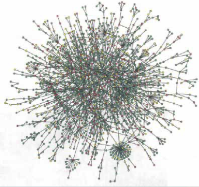
1.1.2 代謝ネットワーク(TCA)
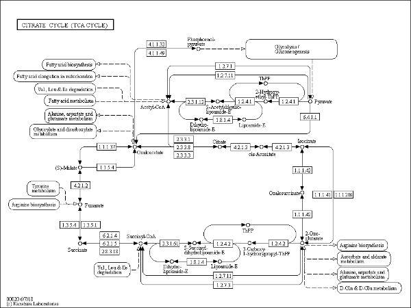
1.1.3 インターネットマップ (The Opte Porject, 2005)
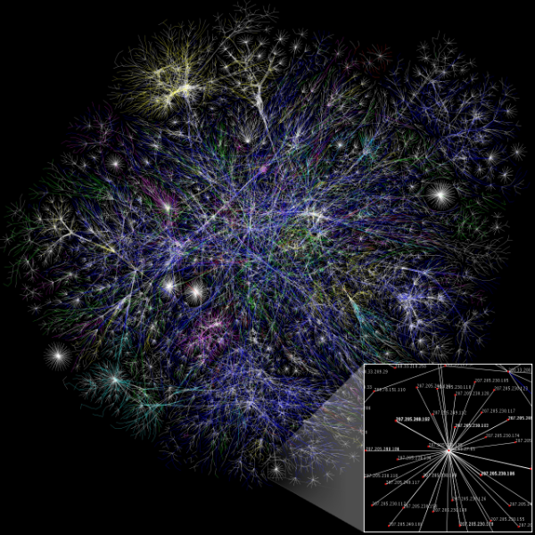
1.2 ネットワークをモデリングはなぜ
- ネットワークモデルの構造
- Erdos-Renyi random graph
- Watter-Strogatz small world model
- Barabasi-Albert scale-free networks
- 動的な意義
- 疾病や情報の拡散
- ソーシャルネットワーク
- 遺伝子発現情報
- … …
2 ネットワークの用語
2.1 “ネットワーク” \(\equiv\) “グラフ”
| 領域 | 点 | 線 |
|---|---|---|
| 数学 | 頂点(vertices) | 辺(edges,arcs) |
| コンピュータサイエンス | 節点(nodes) | リンク(links) |
| 物理学 | サイト(sites) | ボンド(bonds) |
| 社会学 | actors | ties, relations |
2.2 例: Random network and Scale-free network
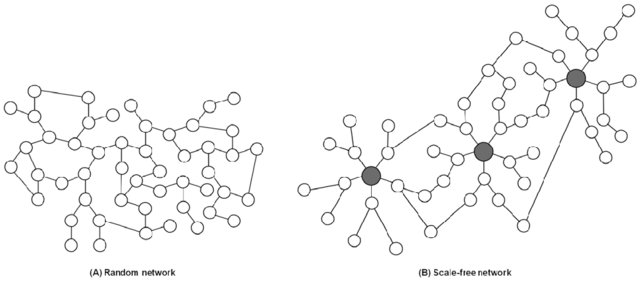
2.3 有向グラフ(Directed graph)と無向グラフ(undirected graph)

2.4 有向グラフ: 非巡回と巡回 (Acyclic and cyclic graph)
有向非巡回グラフ
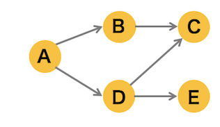
有向巡回グラフ
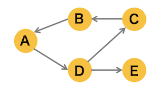
2.5 グラフの表現：隣接行列(Adjacency matrix)
隣接行列: 無向グラフ
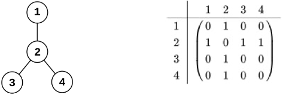
隣接行列: 有向グラフ
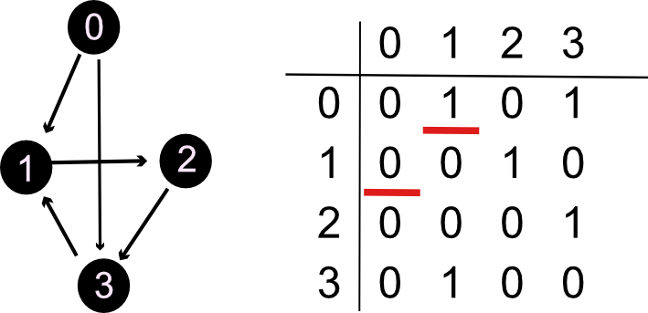
2.6 グラフの表現：隣接リスト (Adjacency list)
隣接リスト: 無向グラフ
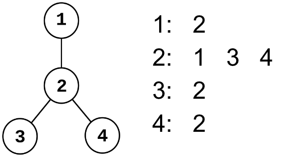
隣接リスト: 有向グラフ
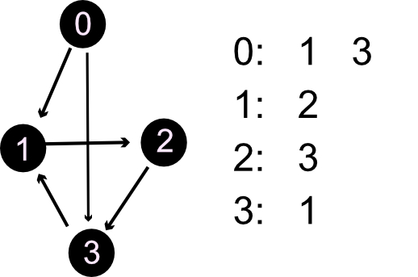
3 ネットワークの構築
論文によく使うシンボルは、グラフG、頂点セットV、辺セットEとし、 あるグラフGが \(G=(V, E)\) で表す。
3.1 頂点間の距離
頂点Aと頂点Bがどのぐらい離れることによって 頂点Aと頂点Bの間に辺をつけます。いわゆる、 辺が頂点間の距離による定義します。 次は、よく使う距離の定義を紹介します。
3.2 都市ブロック距離 (City Block Distance)
\[d = \sum_{i=1}^{k} |a_{i} - b_{i}|\]
Note: City Block distanceは \(d \ge 0\), マンハッタン(Manhattan distance)距離とも呼ばれます.
3.3 ユークリッド距離 (Euclidean Distance)
k次元の点aと点bの間のユークリッド距離は次の式で計算する。
\[d = \sqrt{\sum_{i=1}^{k} (a_{i} - b_{i})^2}\]
Note: ユークリッド距離は \(d \ge 0\)
3.4 平方ユークリッド距離 Squared Euclidean Distance
k次元の点aと点bの間の平方ユークリッド距離は次の式で計算する。
\[d = \sum_{i=1}^{k} (a_{i} - b_{i})^2\]
3.5 Half Squared Eculidean Distance
\[d = \frac{1}{2}\sum_{i=1}^{k} (a_{i} - b_{i})^2\]
3.6 Pearson’s相関係数(Correlation coefficient)
k次元の点Aと点Bの相関は、以下の計算式で計算する。 \[d = \frac{cov(A, B)}{\sigma_A\sigma_B} \]
Note: 相関係数は無次元量で、−1以上1以下の実数に値をとる。
3.7 Cosine Correlation
k次元の点Aと点Bの相関は、以下の計算式で計算する。 \[ d = \frac{A\cdot B}{||A||||B||} = \frac{\sum_{i=1}^{k}A_i B_i}{\sqrt{\sum_{i=1}^{k}A_{i}^{2}}\sqrt{\sum_{i=1}^{k}B_{i}^{2}}}\]
Note: Cosine Correlationの範囲が−１から+1まで (+１はaとbの類似度が一番高いと示す).
3.8 Tanimoto係数(Tanimoto Coefficient)
k次元の点Aと点Bの相関は、以下の計算式で計算する。 \[ T_s = \frac{\sum_{i}(A_i \bigwedge B_i)}{\sum_{i}(A_i \bigvee B_i)} \] \[d = -log_{2}(T_s)\] 相同性がnon-zeroの場合, ここでの\(\bigwedge\) と \(\bigvee\) はbitwiseのand, orの操作です。
Note: Tanimoto係数はJaccard係数の拡張バーションです。バイナリーの場合、Jaccard係数になって 範囲が0から+1まで (+１はaとbの類似度が一番高いと示す).
3.9 Tanimoto係数(Jaccard係数の拡張バージョン)の例
A = [“リンゴ”,“ブドウ”,“イチゴ”,“パイン”,“キウイ”,“メロン”]
B = [“メロン”,“イチゴ”,“リンゴ”,“パインアップル”]
全部の種類で、“リンゴ”,“ブドウ”,“イチゴ”,“パイン”,“キウイ”,“メロン”,“パインアップル”を用いて、 AとBをベクトル化する。
\[ A = [1, 1, 1, 1, 1, 1, 0] \] \[ B = [1, 0, 1, 0, 0, 1, 1] \]
3.10 Tanimoto係数とJaccard係数の例 - Con’t
AとBの長さは、
3.11 Tanimoto係数とJaccard係数の例 - Con’t
Tanimoto係数：
Jaccard係数: \(A \cap B = 3\) と \(A\cup B = 7\)
\[J = \frac{ A\cap B}{A\cup B } = \frac{3}{7} \]
3.12 データからネットワークの構築
\[d = \sum_{i=1}^{k} |a_{i} - b_{i}|\]
ノードのデータ
| Node id | attribute |
|---|---|
| 1 | 5 |
| 2 | 2 |
| 3 | 1 |
| 4 | 10 |
| 5 | 7 |
距離行列：(City block distance)
| Node 1 | Node 2 | Node 3 | Node 4 | Node 5 | |
|---|---|---|---|---|---|
| Node 1 | 0 | 3 | 4 | 5 | 2 |
| Node 2 | 3 | 0 | 1 | 8 | 5 |
| Node 3 | 4 | 1 | 0 | 9 | 6 |
| Node 4 | 5 | 8 | 9 | 0 | 3 |
| Node 5 | 2 | 5 | 6 | 3 | 0 |
3.13 距離行列からネットワークの構築
距離行列：(City block distance)
| Node 1 | Node 2 | Node 3 | Node 4 | Node 5 | |
|---|---|---|---|---|---|
| Node 1 | 0 | 3 | 4 | 5 | 2 |
| Node 2 | 3 | 0 | 1 | 8 | 5 |
| Node 3 | 4 | 1 | 0 | 9 | 6 |
| Node 4 | 5 | 8 | 9 | 0 | 3 |
| Node 5 | 2 | 5 | 6 | 3 | 0 |
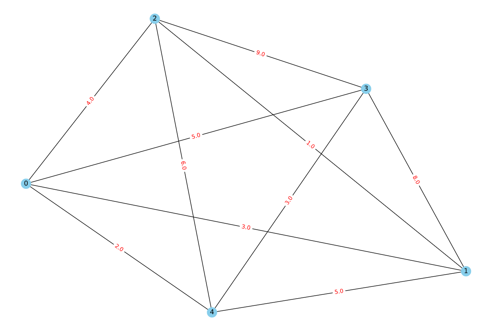
4 ネットワークの統計 (undirected graph)
4.1 クラスタリング係数
クラスタリング係数は、グラフ内のノードが一緒にクラスタ化される傾向の程度の尺度です。 以下の2つを紹介します。
- Global clustering coefficient
- Local clustering coefficient
4.1.1 Local clustering coefficient
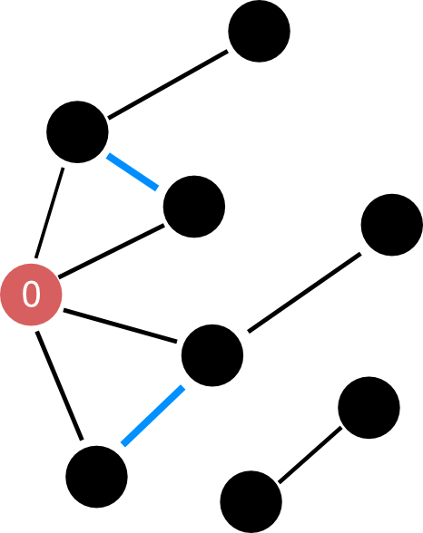
\[ C_i = \frac{2 m_i}{d_i (d_i - 1)} \] \(d_i\) はノード \(i\) のdegree, \(m_i\) はノード \(i\) の隣接ノード間のペアの数です。 左の図のように、ノード0のlocal clustering coefficientは、 \[ C_i = \frac{2\times 2}{4\times(4-1)} = \frac{1}{3} \] \(m_i\)(青い線の数)が2、\(d_i\) が4です。
4.1.2 Global clustering coefficient
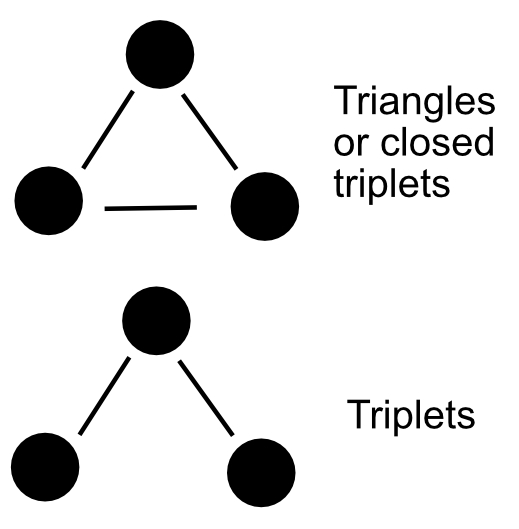
ネットワーク全体でのクラスタリングを測る。
- 方法1. グラフ中に各ノードのローカルクラスタリング係数の平均値。
- 方法2. Closed triplets(或は3x三角形)が全tripletsに対しての割合です。
4.1.3 Global clustering coefficientの例
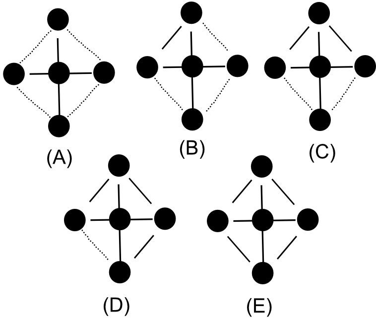
| 三角形の数(a) | 全体tripletsの数(b) | Global CC(a/b) | |
|---|---|---|---|
| A | 0 | 4 | 0 |
| B | 1 | 4 | 0.25 |
| C | 2 | 4 | 0.5 |
| D | 3 | 4 | 0.75 |
| E | 4 | 4 | 1 |
4.2 平均ノード間距離
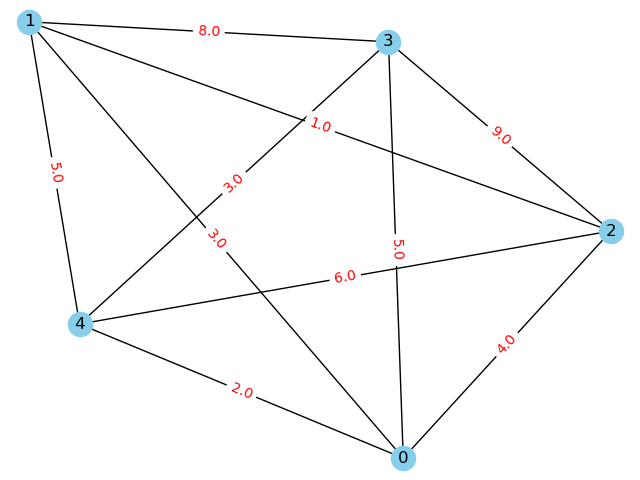
ネットワーク(グラフ) \(G\) 内の全てのノード間距離の平均値 \[\bar{d} = \sum_{u,v\in V}\frac{d(u, v)}{n(n-1)} \] \(d(u, v)\) は頂点セット \(V\) 内に頂点 \(u\) と頂点 \(v\) の間に最短距離です。 \(n\) はグラフ \(G\) の頂点の数です。
左図の平均ノード間距離は、\(d = 4.6\) です。
4.3 ネットワーク半径(radius)、径(diameter)と離心数(eccentricity)
ネットワーク(グラフ) \(G(V, E)\) において, ある頂点 \(v\) の離心数 \(e_{G}(v)\) が \(G\) 内他の頂点と最大距離と定義する。
- ネットワーク半径(radius): \[ rad(G) = \min_{v\in V}e_{G}(v) \]
- ネットワーク径(diameter): \[ diam(G) = \max_{v\in V}e_{G}(v) \]
- ネットワーク平均離心数(eccentricity): \[ \bar{ecc(G)} = \frac{1}{n}\sum_{v\in V}e_{G}(v)\]
4.4 ネットワークの比較
ある2つ無向グラフ(unweighted) \(G_{1}(V_{1}, E_{1})\) と \(G_{2}(V_{2}, E_{2})\) の 比較は、グラフ理論における概念の一つであるグラフ同型に由来する問題である、つまり、グラフ同型性判定問題です。
以下の2つグラフは同じでしょうか。
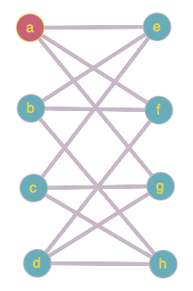
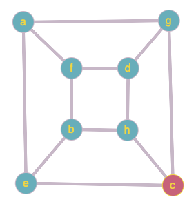
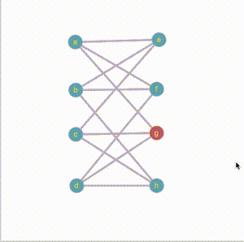
Online tools used https://graphonline.ru/en/
4.5 ネットワークのサブネットワーク
頂点のprizeの和と辺のcostの和を最小化するというPrize Collecting Steiner Forest(PCSF)アルゴリズムによって コンテキストに関連する高信頼性サブネットワークを識別する。
左図のような入力ネットワークから右図のよう出力ネットワークを得る。
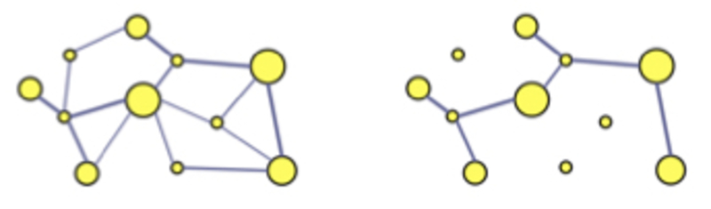
5 ネットワークの可視化
- Graphviz コマンドラインツール
- Cytoscape
- Gephi
5.1 Graphviz: コマンドラインツール (C)
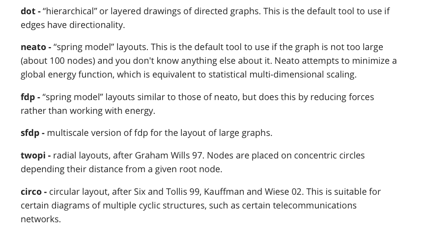
5.2 Cytoscape: (Java)
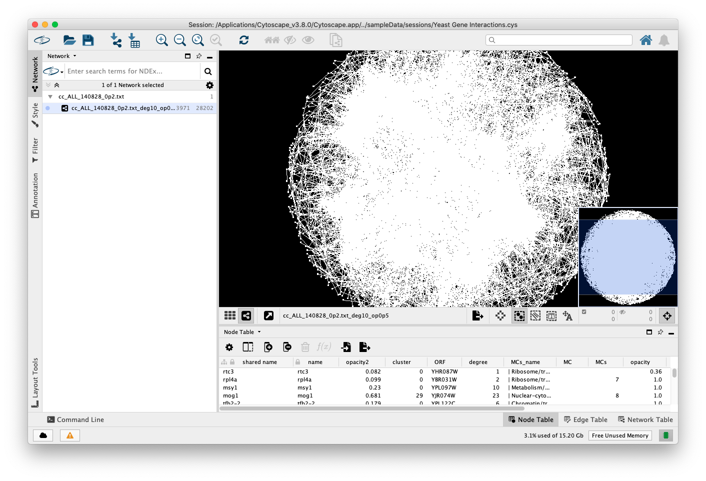
5.3 Gephi
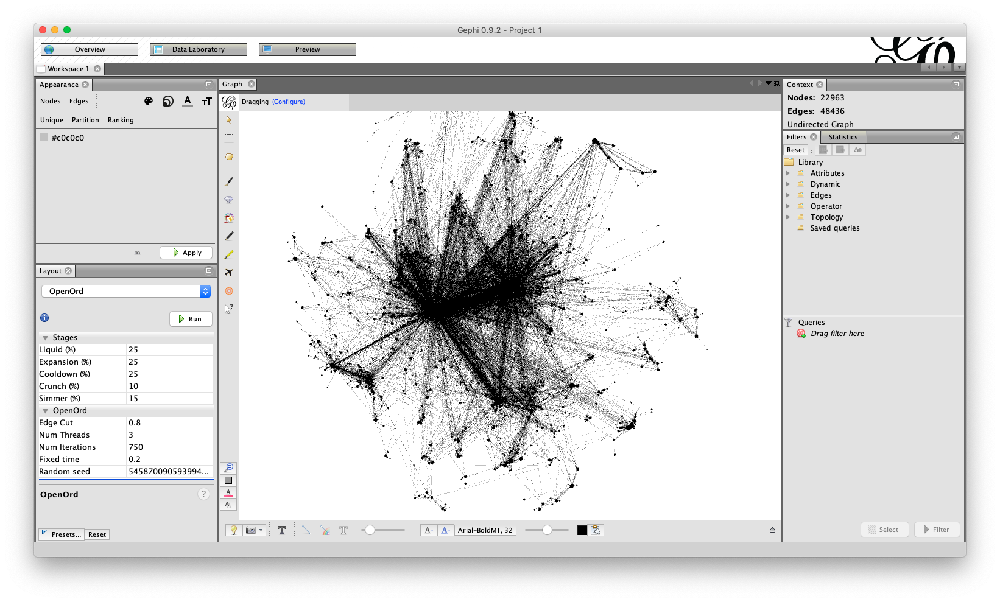
6 遺伝子共発現ネットワークの構築
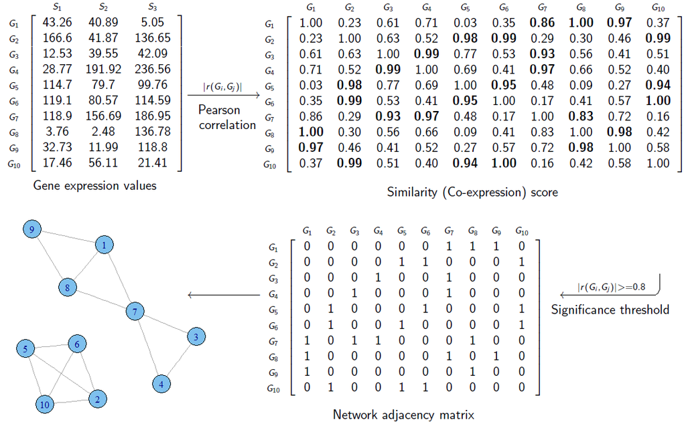
from Wikipidia
6.1 Pearson相関係数（Pearson’s correlation coefficient）
ここで、 遺伝子ペアの発現の類似性（\(s_{ij}\)）は、
絶対値
\[ s_{ij} = |corr(i, j)| \]
符号を維持するため
\[ s_{ij} = \frac{1 + corr(i, j)}{2} \]
6.2 遺伝子ペア(辺)の選択: threshold
signum関数
\[a_{ij} = signum(s_{ij}, \tau) \equiv \begin{cases} 1 \quad \text{if}\,\, s_{ij} \ge \tau \\ 0 \quad \text{if}\,\, s_{ij} < \tau \end{cases}\]
sigmoid関数
\[a_{ij}=sigmoid(s_{ij}, \alpha, \tau_0)\equiv\frac{1}{1+e^{-\alpha(s_{ij}-\tau_0)}}\]
Power関数
\[a_{ij}=power(s_{ij}, \beta)\equiv|s_{ij}|^{\beta}\]
6.3 遺伝子ペア（辺）の選択: scale free criterion
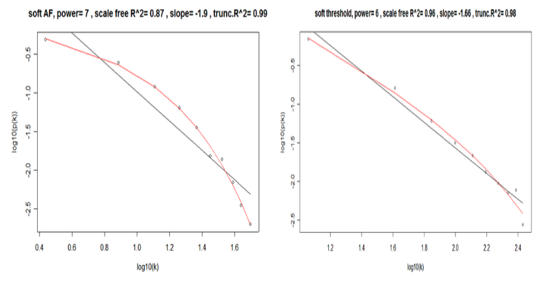
赤：A exponentially truncated power law 黒：冪乗則
Scale-free topology \[ p(k) \sim k^{-\gamma} \]
- 線形モデル \[ log_{10}(p(k)) \sim log_{10}(k) \]
- A exponentially truncated power law \[ p(k)\sim k^{-\gamma}exp(-\alpha k) \]
Zhang, B., Horvath, S., 2005. A general framework for weighted gene co-expression network analysis. Stat Appl Genet Mol Biol 4, Article17. 10.2202/1544-6115.1128
6.4 Recommendation of scale free criterion
Only consider those parameter values that lead to a network satisfying scale- free topology at least approximately, e.g. signed \(R^2 > 0.80\).
Zhang, B., Horvath, S., 2005. A general framework for weighted gene co-expression network analysis. Stat Appl Genet Mol Biol 4, Article17. 10.2202/1544-6115.1128
6.5 遺伝子（頂点）の連結度(Connectivity)
- 点連結度 \[k_i = \sum_{j=1}^{n} a_{ij} \]
- Topological Overlap Matrix(TOM)-based \[w_i = \sum_{j=1}^{n} w_{ij}, \text{where}\quad w_{ij} = \frac{l_{ij}+a_{ij}}{min\{k_i,k_j\}+1-a_{ij}} \] \(l_{ij}=\sum_{u}a_{iu}a_{uj}\), and \(k_i=\sum_{u}a_{iu}\)
6.6 TOMの例
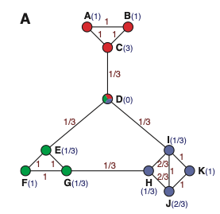
(＊)の数字は頂点のクラスタリング係数です。辺の数字はTOMの値です。
頂点Hと頂点Jの度数は \(k_{H} = 3\) と \(k_{J} = 3\) になり、 頂点Hと頂点Jと同時に連結の頂点の数は1となります。
6.7 Pros and Cons
- 単なるthreshold
- 簡単
- 実装しやすい
- loss of information
- sensitivity to the choice
- scale free criterion
- ネットワークはscale-free特性をほぼ満たすことが必要
- 選択に非敏感
- 計算量が大き
7 遺伝子共発現ネットワークの解析
7.1 Scale free v.s. Modularity
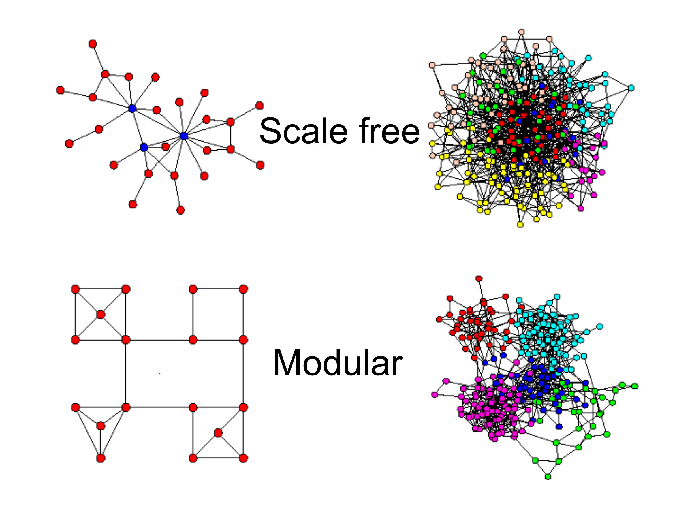
7.2 Modularityの仮説
ランダム仮説(Random Hypothesis)
ランダムネットワークは、コミュニティ構造を持たない。
Maximal Modularity Hypothesis
特定のネットワークの最大のモジュール性Mを持つパーティションは、最適なコミュニティ構造がある。
7.2 Modularityの仮説
\[ M = \sum\limits_{c = 1}^{n_c } {\left[ {\frac{{L_c }}{L} - \left( {\frac{{k_c }}{{2L}}} \right)^2 } \right]} \]
ここで、コミュニティ \(C_c\) 内において、\(L_c\) は辺の総数、\(k_c\) は頂点の次数の総和、 \(L\) はネットワークの辺の数です。
7.2 Modularityの仮説
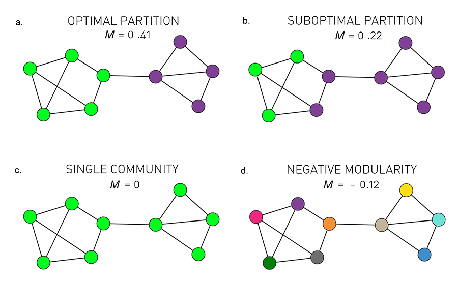
7.3 Modularityに基づいてコミュニティの識別
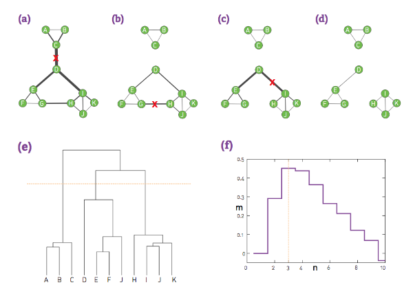
from A.-L. Barabási, Network Science: Communities.
7.4 モジュール性の限界(Limits of Modularity)

\[ \Delta M_{AB} = \frac{{l_{AB} }}{L} - \frac{{k_A k_B }}{{2L^2 }} \] \(k_A\) と \(k_B\) は、それぞれ \(A\) と \(B\) の次数の総数である。 \(\frac{k_A k_B}{2L}<1, L_{AB}\ge 1 \Longrightarrow \Delta M_{AB} > 0\), \(A\) と \(B\) をマージする。
\(k_A \sim k_B = k\Longrightarrow k\le \sqrt{2L}\)
他の方法は:
- “Fast Modularity” Community Structure Inference Algorithm http://cs.unm.edu/~aaron/research/fastmodularity.htm
- Louvain method: Finding communities in large networks http://cs.unm.edu/~aaron/research/fastmodularity.htm
7.5 最小全域木(Minimum spanning tree)
最小全域木とは、各辺に重み（コスト）がある場合、最小の総和コストで構成される全域木を最小全域木という。
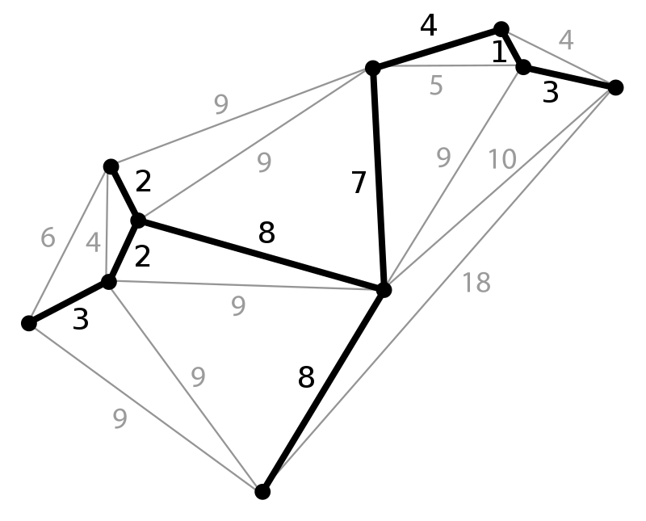
7.5.1 クラスカル法 (Kruskal’s Algorithm)
7.5.2 プリム法 (Prim’s Algorithm)
##+beginnotes COMMENT ネットワークのモジュールの識別(Module detection) R - bootnet, which takes a variance-covariance matrix as the input only \[EBIC = -2L+Elog(N)+4\gamma Elog(P)\] L denotes the log-likelihood, N the sample size, E the number of nonzero edges, and P the number of nodes. #+endnotes
7.6 Composite Index of Dynamical network biomarker(DNB)
- 有力なグループを有意性(student-t検定)で決定する
- Composite Indexを計算する
\[ I \stackrel{\mathrm{def}}{=} \frac{SD_d\cdot PCC_d}{PCC_o} \]
ここで、\(PCC_d\) は有力なグループなPearson相関係数の絶対値の平均値、\(PCC_o\) は 有力なグループと以外な分子なPearson相関係数の絶対値の平均値です。
7.6 Composite Index of Dynamical network biomarker(DNB)
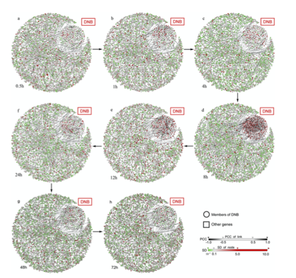
8 遺伝子共発現による遺伝子調節ネットワークの推定(これから)
- Boolean Model (有向グラフ、directed graph)
- Bayesian Model (有向非巡回グラフ、Acyclic directed graph)
- Differential equations (有向グラフ、directed graph)
- Graphical Gaussuan Model (無向グラフ、undirected graph)
- Correlation Coeffcient
- Partial Correlation Coefficient
8.1 Boolean Model
8.1.1 Intro
8.1.2 Recommened Papers
- Tatsuya Akutsu, Satoru Kuhara, Osamu Maruyama, and Satoru Miyano. Identification of gene regulatory networks by strategic gene disruptions and gene overexpressions. In Proceedings of the Ninth Annual ACM-SIAM Symposium on Discrete Algorithms, pages 695-702, San Francisco, California, 25-27 January 1998.
- Reveal, a general reverse engineering algorithm for inference of genetic network architectures. In Pacific Symposium on Biocomputing, pages 18-29, Maui, Hawaii, 1998. World Scientific Publishing Co.
8.2 Bayesian Model
8.2.1 Intro
8.2.2 Recommended papers
Friedman N., Linial M., Nachman I., and Pe’er D.Using bayesian networks to analyze expression data. J. Computational Biology, 7(3):601-620, Nov 1998.
8.3 Differential equations
8.3.1 Recommended papers
Chen T, He HL, Church GM. Modeling gene expression with differential equations. Pac Symp Biocomput. 1999;29-40.
8.4 Graphical Gaussian Model
It is also said ’concentration graph’ or ’covariance selection’ model. Suppose that a pair of genes, say Genes A and B, show a high correlation in their expression profiles. There are three possible mechanisms to induce a high correlation in the expression levels between them.
- Direct interaction.
- Indirect interaction.
- A common gene, i.e., the expressions of Genes A and B are regulated by a common gene product.
8.4.1 Recommended papers
Hiroyuki Toh, Katsuhisa Horimoto Bioinformatics, Volume 18, Issue 2, February 2002, Pages 287–297
9 カイコの遺伝子共発現ネットワークの解析
目的：カイコの遺伝子ネットワークによる有用物質産生関連候補遺伝子の同定
9.1 サンプルデータ
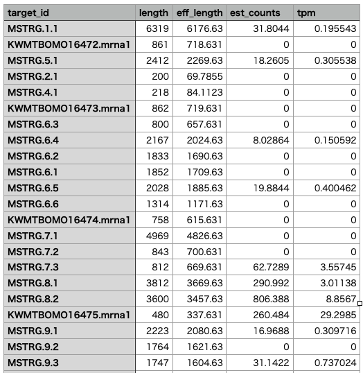
サンプルデータには、51,926遺伝子がある。TPM列を用いて、ネットワークを構築しました。
9.2 構築したネットワーク(fundamental analysis)
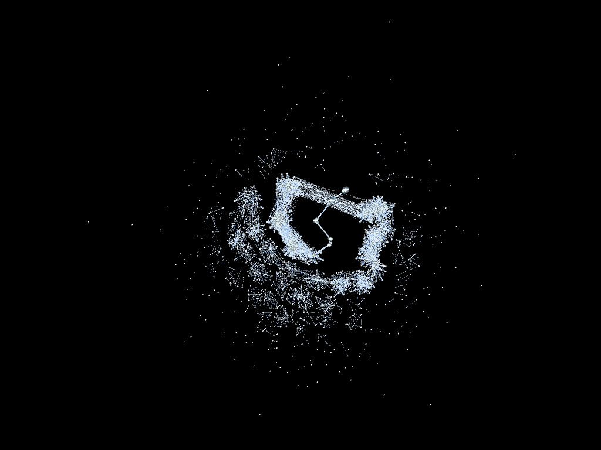
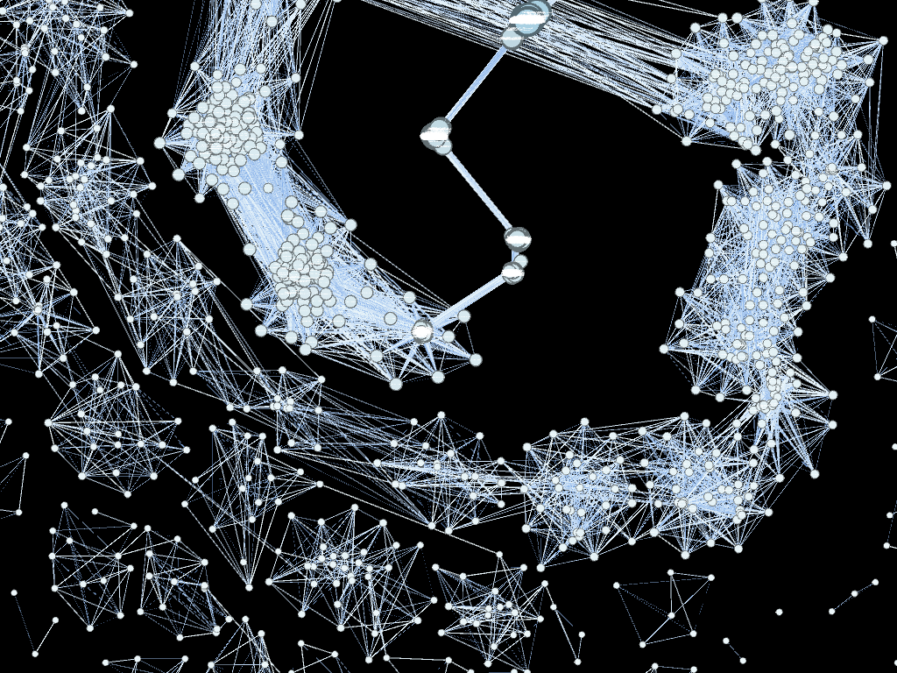
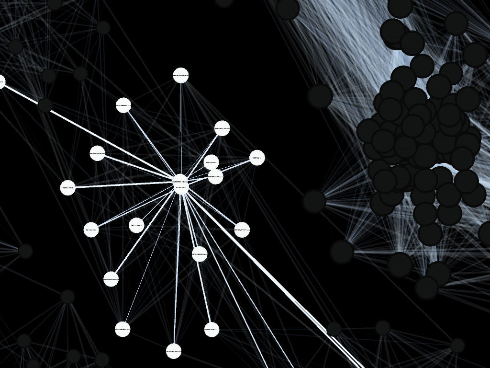
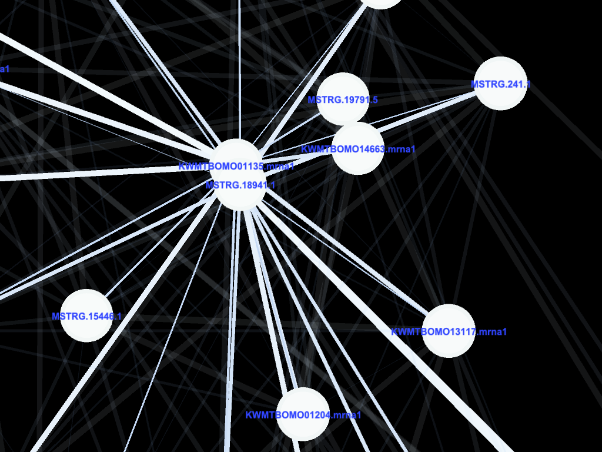
サンプルデータには、51,926遺伝子がある。発現値が平均値より大き遺伝子を集め、グラフを構築した。 city block距離による辺を定義し、ノードペアの距離において、下の25％データの値を域値にしました。
- ノードの数は2785
- edgesの数は129327
9.3 研究方法
現時点で、51,926遺伝子 x 20種類組織である。
- 共発現ネットワークの構築（Pearson相関）
- 組織別のVariance-Covarianceマトリックス
- 遺伝子ごとのVariance-Covarianceマトリックス
- 最小全域木(Minimum spanning tree): Primアルゴリズム
グラフの分割（graph partitioning）
Metis(c), graph-tool(python), pcsf-fast(python)
- [\(\star\)] 各コミュニティにおいて、以下の指標でランキング \[ I \stackrel{\mathrm{def}}{=} \frac{\#E}{\#N}\frac{PCC_d}{PCC_o} \] 式の改良案を考えています。
- 選択したコミュニティ(遺伝子群)に対して注釈解析
- [Option?]組織別のネットワークの比較